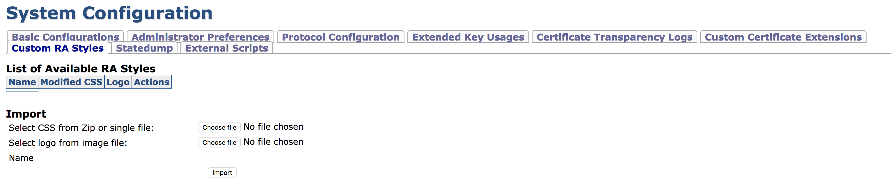

Custom RA Stylesheets
Custom RA Styles allows CA administrators to upload and apply their own logos and style sheets (CSS) for the RA web. This allows you to change the appearance of RA Web menus and buttons and customize the background etc.
An uploaded style may be bound to one or many administrator roles. Members of this role will automatically receive applied styles when logging in to the RA Web on any EJBCA instance connected to the CA.
Uploading Customized CSS and Logo
To upload RA Style content, go to Admin GUI>System Configuration and select Custom RA Styles.
The page displays a list of available uploaded styles or an empty list if no content has been previously added.

To upload customized RA logo: Click Choose file to browse for a single .png or .jpg file to replace the RA logo.
To upload customized CSS files: Click Choose file to browse for either a single .css file or a .zip containing multiple .css files. The uploaded files must have the same names as the files that are replaced.
Note that it is not necessary to upload both the logo and CSS files, only upload what you intend to replace.
Give the uploaded styles a name and click Import.
Most of the RA appearance is modified in the file w_e_styles.css but any of the CSS files can be replaced.
The following lists the replaceable CSS files (as of EJBCA 6.10.0):
base-context.css
base.css
base-min.css
buttons-core.css
buttons.css
forms.css
forms-nr.css
grids-core.css
grids.css
grids-responsive.css
grids-responsive-old-ie.css
grids-units.css
menus-core.css
menus.css
menus-dropdown.css
menus-horizontal.css
menus-scrollable.css
menus-skin.css
pure.css
pure-nr.css
tables.css
pure.css
ra.css
w_e_style.cssAccess Rights
In order to modify the appearance of the RA, the following access rules are required:
/administrator/
/system_functionality/edit_systemconfiguration/
Applying Styles To Administrator Roles
Once styles are uploaded, it has to be bound to a role to take effect. To apply a custom style to a role, go to Admin GUI>Administrator Roles and select the desired style from the RA Styles list menu. The next time members of this role login to the RA Web, their new style is applied. Keep in mind that images and CSS files are browser cached and changes might thus not appear until the browser cache is invalidated or cleared manually.
If an administrator belongs to multiple roles with RA Styles applied, the desired style can be changed using the RA Web Preferences menu.